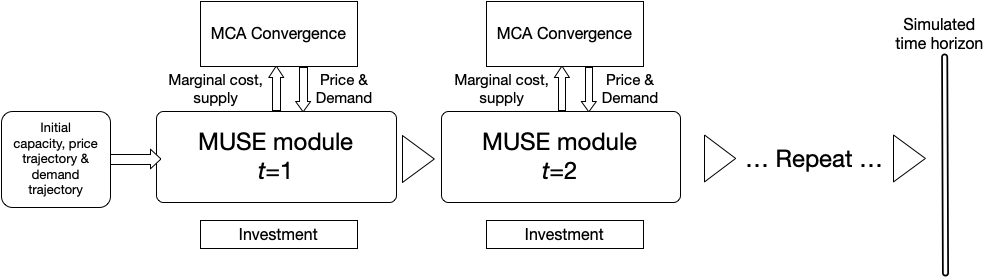

Mini-lecture 2.3 provides an overview of the benefits of using an agent-based modelling and simulation when applied to energy systems analysis. We will learn how we can more closely model real-life by relaxing some of the assumptions necessary in other energy systems models.
As previously discussed, different modelling approaches have different advantages and disadvantages. One of the main differences that MUSE has, which it is able to model through its agent-based simulation approach, is its ability to model both limited foresight and imperfect information. These are significant relaxations when compared to optimisation-based models. In this mini-lecture we will explore these concepts in more detail and discover how these relate to MUSE and energy systems specifically.
Imperfect information is an economic term which is the opposite of perfect information. With perfect information in a market, all consumers and producers have perfect and instantaneous knowledge of all market prices, their own utility and cost functions. However, in real-world energy markets, this is not the case. Some information is hidden or unknown, such as other player’s cost functions.
With some models it is necessary to make this assumption of perfect information. For example the bids of all the agents in the market are known at all times. This is a significant assumption and can influence the final outcome of the model. By using the agent-based simulation methodology, we can avoid making this assumption and allow information to be hidden between agents, as happens in decentralised energy markets.
Limited foresight specifies how players within a game understand how the future may evolve. In the real-world, prediction and forecasting are difficult problems to solve, particularly within the uncertainty of energy markets. This become even more challenging when trying to make long-term predictions.
Within MUSE long-term predictions must be made by investor agents. For example, if a company wanted to invest in a power plant, they would need to predict the amount of money they can sell their electricity for over the lifetime of the power plant, or in other words the market price for electricity. In some cases power plants operate for 30 years or more and so electricity prices 30 years into the future are required!
MUSE makes a simplified assumption about the future prices expected by investors: they know what the price will be in the next five years. However, they assume a flat forward extension of the prices from this period. Or in other words, the energy prices over the entire lifetime of the plant are the same as the known price in the next five years. However, this assumption that the investors make will more than likely not be correct, leading to errors in their predictions, just like in the real world.
In contrast to perfect foresight, where variables such as prices, demand and technology costs in all the future time periods are known from the beginning of the simulation, using the limited foresight period, agents make investments under expectations of the market, which may be wrong.
Figure 2.3.1, below, details how MUSE runs. Firstly, the initial capacity, price trajectory and demand trajectory are known and set by the user. These variables are exogenous to the model, which is to say that they are fixed and imposed on the model. These are used to initialise the MCA convergence algorithm. The MCA convergence algorithm finds a suitable set of investments which equilibrate supply and demand. Once equilibrium has been reached, the technologies are decided and the commodity prices are set. These commodity prices reflect the technology marginal costs, or the costs required to generate or create 1 unit of commodity, excluding capital costs. The investments balance asset retirements and the increase in demand, ensuring that supply meets demand.
This whole process repeats itself at every timestep (t) until the specified number of milestone years have run.

Figure 2.3.1: MUSE iteration process
This mini-lecture provided an introduction to the terms limited foresight and imperfect information. We learnt how these assumptions have been integrated into the MUSE model and what this means for the modelling process. In the next mini-lecture we will explore the key components that make up MUSE.